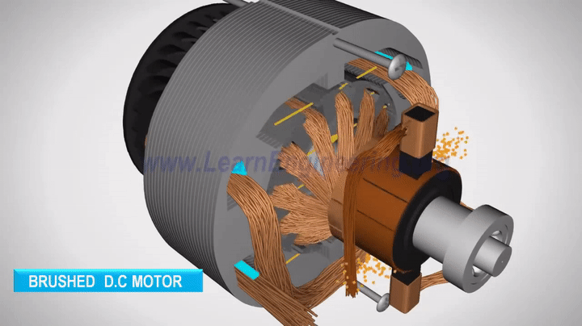

Modelo matematico de un
MOTOR DC.
Aquisicion de datos de Simulink a travez de una base de datos local(Xampp),puedes descargarlo aqui Mi voltaje de entrada en simlink sera enviada por mi android Support Package for Android Device & para la comunicacion entre simulink fue necesario Android studios.
Ver datos Adquiridos